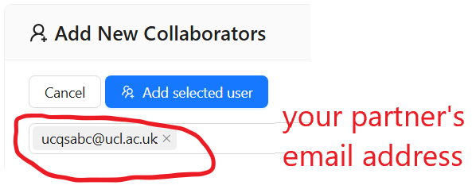

Set up your Cocalc Account
Set up your Cocalc Account#
Before using CoCalc for the first time you will need to create an account. You will need to do this using your UCL email address, because a licensed, personal project has already been set up for you linked to that email. Follow the steps below to setup your account and access your project.
✓ Create your account
Open the Cocalc web site www.cocalc.com and click . Enter the requested information to create your account. You must use your UCL email in its short form, which may be similar to ucqsabc@ucl.ac.uk.
✓ Access your project
Click on in the top-left corner.
You should see two projects titled ‘NSCI0036’ and ‘NSCI0036_Homework’.
Click on the project ‘NSCI0036’ to open it. DON’T OPEN THE NSCI0036_Homework PROJECT!
Your project is essentially a virtual computer hosted in the cloud, including operating system (Linux) and preinstalled software libraries so that you can start programming with Python straight away.
✓ Set up collaboration
Next you’ll need to find someone to collaborate with.
Turn to the person sitting next to you and ask them for their email address (e.g.
ucqsabc@ucl.ac.uk)
Click the button on the left menu. Enter your partner’s email address in the ‘Add New Collaborators’ box and click ‘Add Selected User’.

Ask your partner to open your project by clicking the in the top-left corner and finding your project in their project list.
✓ Collaborate
Cocalc collaboration enables multiple users to edit and run the same Python document simultanously, in a similar fashion to Google Docs or other online office tools.
Open your NSCI0036 project, select the
button and select
before_you_begin > collaboration_test.ipynbin the file list.
Ask your partner to open the your NSCI0036 project and select
before_you_begin > collaboration_test.ipynbin the file list.
Make some edits to the file and notice that any changes are immediately visible to your partner.
Experiment!
There are lots collaboration features in Cocalc - experiment!